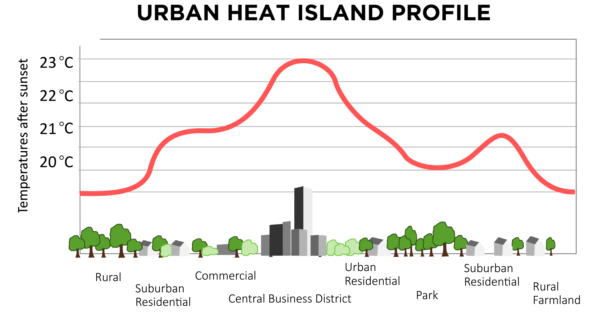

knitr::include_graphics("figures/week9_mindmap.png")9 Week9
9.1 Week 9: SAR in GEE
9.1.1 Summary:
This is a mind map of this week’s lecture.
This lecture provides an in-depth look at Synthetic Aperture Radar (SAR) technology and its applications in environmental monitoring and urban planning, particularly in change detection. SAR is a powerful remote sensing tool that uses radar waves to penetrate clouds and lighting conditions to capture fine texture and structural changes in the Earth’s surface. Compared with traditional optical remote sensing, the unique advantages of SAR lie in its all-weather, all-day observation capabilities and its sensitivity to changes in surface materials and humidity. In addition, this lecture evaluates the advantages of processing SAR data using tools such as Google Earth Engine (GEE) and Synthetic Aperture Radar Interferometry (InSAR), which provide powerful data processing capabilities, making large-scale surface monitoring feasible and efficient . Nonetheless, SAR data analysis faces several limitations, including the complexity of interpreting ground truth, high data processing requirements, and the need for application-specific method development. Looking to the future, the development of SAR technology is likely to focus on improving resolution, enhancing data processing algorithms, and the ability to fuse more types of remote sensing data. As machine learning and artificial intelligence technologies advance, automated methods of identifying and classifying surface changes will become more precise and commonplace. In addition, the development of more user-friendly analysis tools and platforms will enable non-professionals to use SAR data for decision support and environmental monitoring.
This week’s practical content includes discussions on the urban heat island effect (The image below explains the heat island effect), the impact of heritage in redline areas on urban thermal management, and how to use Google Earth Engine (GEE) for cloud-based remote sensing data analysis. Special emphasis is placed on the use of Landsat and MODIS (Moderate Resolution Imaging Spectroradiometer) data products to explore temperature changes in urban areas, including technical details of data processing, analysis and visualization. I learned how to load and process Landsat and MODIS datasets to obtain temperature information for urban areas. Includes how to use the reduceRegions function to process Landsat and MODIS data, and how to export the processing results. Specifically, the content includes filtering data, applying scaling factors, temperature unit conversion (from Kelvin to degrees Celsius), data fusion, and how to map the results to a specific urban area (such as Beijing). It also covers how to use GEE to perform time series analysis, assess temperature trends in urban areas, and how to export data for further analysis.
knitr::include_graphics("figures/w9_urban-heat-island.png")
Source: Royal Meteorological Society (2021)
9.1.2 Applications:
Based on what I learned this week, I am interested in the heat island effect. The following are some studies that use remote sensing technology to monitor and analyze the heat island effect.
Almeida, Teodoro and Gonçalves (2021) conducted research on the use of remote sensing data/technology to study the urban heat island (UHI) effect. They estimate land surface temperature (LST) by using thermal sensors on satellites, drones or aircraft, and review UHI analysis using remote sensing data/techniques in Scopus and Web of Science (WOS) databases from 2000 to 2020. and LST publications. The article highlights the effectiveness of using remote sensing data/techniques to study the urban heat island effect. In particular, Landsat satellite data are frequently used in estimating land surface temperature (LST) and analyzing land use/land cover (LULC) due to their wide application and high spatial resolution. The figure below shows the steps to generate an LST map. They use thermal sensors in the 8-14 micron range to detect the energy radiated by the Earth and record this radiated energy as a digital number (DN), and then convert these numbers into temperature data. In addition, the authors also used passive microwave sensors. Although their spatial resolution is not as fine as thermal sensors, passive microwave sensors are able to overcome the challenges of atmospheric effects and allow thermal analysis of the atmospheric boundary layer.
knitr::include_graphics("figures/week9_LST.png")Another interesting study explored the relationship between urban heat island effect (UHI) and land use/cover change (LUCC) by analyzing remote sensing images, specifically in the Pearl River Delta region. The authors used Landsat TM and ETM+ images from 1990 to 2000 to obtain brightness temperature and land use/cover types (Chen et al., 2006). The figure below is selected from the Landsat TM image on October 29, 1994 and the ETM+ image on November 1, 2000 to examine the changes in average temperature and the detailed distribution of urban heat islands. In addition, the article also proposes a new index, the Normalized Difference Bareness Index (NDBaI), for extracting bare ground from satellite images. The study found that with the rapid development of urbanization in the Pearl River Delta region, the urban heat island effect has become more obvious, and the spatial distribution of heat islands has changed from a chaotic pattern to a widespread urban heat island pattern. The author calculated the surface brightness temperature through thermal infrared (TIR) data from Landsat 5 TM and Landsat 7 ETM+ images, using the normalized difference vegetation index (NDVI), normalized difference water index (NDWI), and normalized difference building index ( NDBI) and the newly proposed Normalized Difference Exposure Index (NDBaI) to classify and analyze land use and cover. Study spatial changes during urbanization by comparing land use/cover types at different points in time.
knitr::include_graphics("figures/week9-2.png")The land use/cover pattern and temperature of Shenzhen were taken from ETM+ images on October 29, 1994, and November 1, 2000, respectively. Source: Chen et al. (2006)
Both articles used remote sensing technology to study the urban heat island effect (UHI), and both used Landsat satellite data as the main data source, illustrating the importance and effectiveness of Landsat data in the study of the urban heat island effect. Both studies used indicators such as the Normalized Difference Vegetation Index (NDVI) to analyze the relationship between land cover and the urban heat island effect, reflecting the key role of remote sensing indicators in environmental monitoring. The first study provides a macro perspective to help readers understand the development trends and challenges in this field, while the second article serves as a specific case study to delve into the details of a specific area and provides data support for solving specific problems and suggestions, such as urban planning and environmental management, the results directly guide the mitigation measures of the urban heat island effect, and have strong application value.
9.1.3 Reflection:
The urban heat island effect is not only an environmental problem, it is also closely related to urban planning, public health, energy consumption and other fields. Through this week’s study, I began to think about how to apply remote sensing technology, especially data such as SAR and Landsat, to the monitoring and mitigation strategies of the heat island effect. First of all, the causes of the urban heat island effect are complex, including changes in ground coverage types, increased building density, and reduced green spaces. These changes lead to temperature differences between urban areas and surrounding non-urban areas, which in turn affects the quality of life of urban residents and the sustainable development of cities. Through this week’s study, I realized that remote sensing technology, specifically studying UHI by analyzing land surface temperature (LST) data, provides a powerful tool to monitor and analyze these changes. This method can help us identify areas where the heat island effect is most significant, as well as trends over time. Secondly, the application of remote sensing data is not limited to the monitoring of heat island effect. By combining analysis of surface cover types, vegetation indices (such as NDVI) and other environmental indicators, we can gain a deeper understanding of the complex relationship between the heat island effect and urban planning, vegetation cover and human activities. This multi-dimensional analysis method can provide scientific basis for formulating effective mitigation strategies, such as increasing urban green space and improving building materials and design. In addition, I also learned about SAR technology this week. Its capabilities break through the limitations of traditional optical remote sensing technology, such as the impact of cloud cover and lighting conditions on observations, which is very attractive to me. It opens up the possibility of surface monitoring under complex weather conditions, especially in the fields of studying surface changes, environmental monitoring and disaster management. Finally, this is the last section of this learning diary. Thank you very much for reading this and experiencing my experience and mental journey in remote sensing learning. I look forward to exploring more interdisciplinary methods and combining them with remote sensing to solve these complex environmental problems in my future study and research.
9.1.4 References:
Almeida, C.R. de, Teodoro, A.C. and Gonçalves, A. (2021). Study of the Urban Heat Island (UHI) Using Remote Sensing Data/Techniques: A Systematic Review. Environments, 8(10), p.105. doi:https://doi.org/10.3390/environments8100105.
Chen, X.-L., Zhao, H.-M., Li, P.-X. and Yin, Z.-Y. (2006). Remote sensing image-based analysis of the relationship between urban heat island and land use/cover changes. Remote Sensing of Environment, 104(2), pp.133–146. doi:https://doi.org/10.1016/j.rse.2005.11.016.
Royal Meteorological Society (2021). MetLink - Royal Meteorological Society Urban Heat Islands -. [online] MetLink - Royal Meteorological Society. Available at: https://www.metlink.org/fieldwork-resource/urban-heat-island-introduction/.